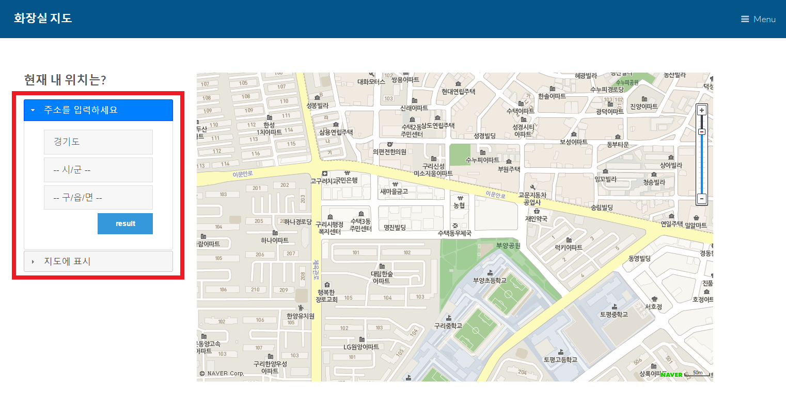
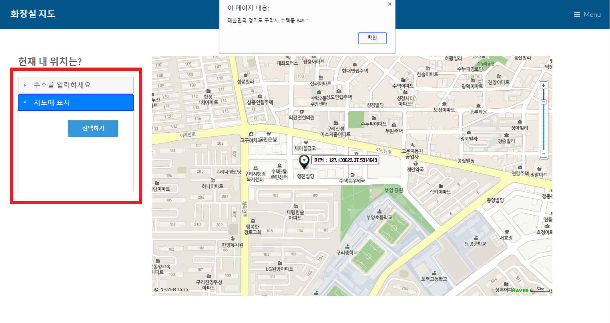
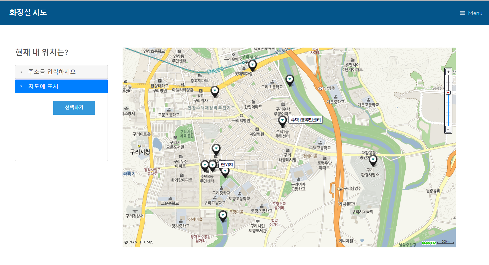

Homework 2
대화형 프로토타입
*화면은 80%로 보는것이 제일 보기 좋습니다.*
1.웹서비스 설계
▶공공데이터 활용 방식
사용하려는 공공데이터는 경기데이터드림(http://data.gg.go.kr/portal/mainPage.do)에서 경기도내에 위치한 공중 화장실 정보를 조회 할 수 있는 open api 입니다.
같은 데이터를 두 가지의 방법으로 검색 할 수 있게 하려 했습니다.
첫번째 방법
1) 드롭다운 형태로 주소를 경기도 - 시 - 동/읍/면 순서로 사용자가 선택
2) 해당 시군의 코드를 미리 저장되어있는 배열에서 가져와 url에 추가하고 거기서 동 이름을 찾아 파싱
3) 지도에 마커표시
두번째 방법
1) 지도에서 자신의 위치를 직접 찾아 클릭 (자신의 위치만 안다면 주소를 알필요없음)
2) 클릭한 위치의 좌표를 가져온다.
3) 역지오코딩을 통해서 좌표를 상세주소로 변환한다.
4) 변환한 주소를 통해서 첫번째 방법의 2)와 같은 방법으로 파싱
5) 지도에 마커 표시
위와 같은 두가지 방법으로 사용자에게 입력을 받을 수 있으며, 공공데이터를 파싱하는 작업은 동일합니다.
2.대화형 프로토타입
▶상호작용의 4단계
표명
:추상적인 목표를 구체적인 입력 형태로 전달
현재위치에서 가까운 거리에 있는 화장실의 위치를 띄워주는 추상적인 목표를 위해 왼쪽에 두가지 방식의 입력형태를 아코디언ui를 이용해서 둘중 하나만 할 수 있도록 만들었다.
변환
:입력된 정보를 바탕으로 시스템 처리 (공공 데이터 접근)
입력된 정보(주소 또는 지도상에서 클릭한 좌표)에서 특정 지역의 코드를 가져와 그 지역의 xml을 가져와 처음부터 끝까지 루프를 도는데 선택한 특정 상세주소를 포함하면 그 화장실의
좌표값을 전역변수로 선언해놓은 배열에 저장한다.
표현
:처리 결과를 시각적 출력 형태로 전달
전역변수로 선언해놓은 배열을 가져와 좌표값을 지도에 마커로 표시하여 사용자가 한눈에 볼 수 있도록 한다.
평가
:출력된 정보를 바탕으로 목표 달성 여부를 확인
사용자가 선택한 주소의 화장실을 모두 마커로 표시하고, 결과값이 없으면 alert로 에러메세지를 띄운다. 그리고 지도에 표시된 마커를 누르면 그 화장실의 상세정보를 띄워서 목표 달성 여부를 확인한다.
▶심성 모형의 효과적 전달
아코디언 UI를 이용하여 둘중 한가지방법을 이용해서 현재 나의 위치를 나타낼수 있게끔 만들었다. 아코디언 첫번째 칸에는 '주소를 입력하세요'라는 문구를 두번재 칸에는 '지도에 표시'라는 문구를 넣었다. 각각의 칸에는 result , 선택하기 버튼이 있어서 버튼을 클릭해야 검색 결과가 지도에 뜰수 있도록 만들었다. 왼쪽에서 사용자가 검색조건을 입력한 다음에, 오른쪽 지도에서 결과를 확인 할수 있도록 이원화시켜 주 기능을 더 돋보이도록 간단하고 깔끔한 인터페이스를 구현했다. 검색결과로 나온 여러 마커들에 마우스를 올리면 건물의 이름름 띄우도록 했다.
3. 세부 구현 방식
[그림1] 초기 스토리보드
[그림2] 주소로 검색
[그림3] 지도에 선택
[그림4] 검색 결과화면
▶검색방법
[그림1]에서 초기단계 스토리보드에서 지도에 표시, 주소로 검색 두가지 방법으로 자신의 위치를 나타낼수 있게 제작을 했다. 이 두가지방법을 제일 잘 표현 할 수 있을 거 같은 아코디언 형태의 jquery UI로 표현했다. 오른쪽에는 지도를 크게 하여 한눈에 결과를 볼수 있도록 계획 했고 초기 스토리보드와 유사하게 인터페이스를 구현하려고 노력했다.
▶주소로 검색
[그림2]에서 처럼 우선 경기도의 31개의 시/군를 드롭다운 메뉴형태로 만들었다. 31개의 시/군에 따른 각각의 동/읍/면으로 chain()을 하여 연결 하였다. 그래서 시/군를 선택하지 않으면 그 밑의 동/읍/면을 선택할 수 없게 하였다. result버튼을 누르면 사용자 드롭다운 형태에서 선택한 요소가 변수에 저장된다. 5000여개의 정보중에서 시/군과 동을 찾아 파싱하려면 굉장한 많은 시간이 소요된다. 따라서 그중 시/군 변수에 저장된 요소는 시군코드로 변환되어 api요청 변수로 들어간다. api요청 변수로 들어가 탐색 범위를 줄이고 그중에서 row에 해당하는 동명이 있으면 표시할 마커 배열 변수에 위도와 경도를 저장한다.
▶지도에서 검색
[그림3]에서 처럼 지도에 표시 아코디언을 누르면 선택하기 버튼이 있다. 버튼을 누르면 현재 화면에 떠 있는 마커들을 모두 지우고 자신의 위치를 지도에 클릭 할 수 있다. 클릭한 위치의 정확한 주소를 역지오코딩을 통해서 알림을 띄우주고, 해당하는 주소를 " "단위로 나누어 시/군과 동/읍/면을 뽑아와 위에서와 마찬가지로 api요청 변수로 들어가 파싱한다.
▶네이버 지도
대화형 프로토타입에서 볼 수 있듯이 네이버 지도api를 사용했다. https://developers.naver.com/main/ 네이버 개발자사이트 링크에 들어가면 지도api를 신청하여 받을수있고, 활용방법도 매우 다양하게 많이 나와있다.
위성지도, 도형띄우기, 마커띄우기등등 예제로 충분히 이해하기 쉽게 설명 해놓았다. 이 사이트를 참고하여 검색결과를 여러개의 마커로 표시하여 지도에 나타낼수있다. 위에서 파싱하는 과정에서 공공데이터 api의 내용중 위도와 경도도 함께 포함되어있어 그 정보를 전역배열에 저장하여 마커를 찍을때 그 갯수만큼 반목문을 돌려 마커를 찍었다. 앞으로 구현할 내용으론 마커를 클릭하면 정보창이 떠서 화장실의 정보를 볼 수 있게 할 것이다.
▶결과화면
[그림4]에서 처럼 선택한 위치의 주변 화장실을 마커로 띄운다. 지도상에서 클릭한 위치는 현위치라는 라벨과 함께 뜬다. 지도에 mouseenter, mouseleave 이벤트 핸들러를 달아서 마커위에 마우스를 올리면 건물이름(라벨)이 보여지도록 한다. 또 마커위에서 마우스가 사라지면 라벨을 지운다. 마커를 클릭시 click 이벤트 핸들러를 달아서 화장실에 대한 정보창을 띄울 예정이다.
▶대화형 프로토타입
아래의 버튼을 누르면 대화형 프로토 타입으로 넘어갑니다.
사용시 반응이 느릴 수도 있으므로 천천히 작동 시켜주세요.
4. 문제점및 해결방법
▶발생한 문제점1
구글, 다음, 네이버 지도중 굳이 네이버 지도를 선택한 이유가 있다면 내가 네이버지도 앱을 사용하고, 한국의 지리는 구글보다 더 자세하게 나올 것이라 예상 했기 때문이다. 위에서 말했듯이 지도에서 클릭한 위치가 좌표계로 정보를 추출할 수 있고, 그 좌표계를 상세 주소로 변환하는 과정을 역지오코딩이라고 한다. 반대로 지오코딩은 서울 서대문구 00동 00아파트 라는 상세주소를 127.xxxx, 37.xxxx 좌표계로 변환하는 것이다. 지도 api를 다루는것이 처음이라 익숙하지 않아 오랜 시간을 소모한 네이버 지도api를 활용에서 마커까지 다 구현을 한 상태에서 네이버 지도api는 역지오코딩을 지원하지 않는다는 점을 인터넷 검색결과로 알았다.
▷해결방법
구글지도api는 역지오코딩을 지원해서 구글 지도 api를 신청해서 받아 자바스크립트 파일에 구글지도를 link해서 네이버지도에서 선택한 point얻고 그것을 구글 지도point로 변환하고 역지오코딩 함수를 이용해서 정보를 가져오고 다시 그 문자열을 가져와 공공데이터 파싱에 사용했다. 매우 비효율적인 방법이다. 그런데 다 구현을 하고 알고보니 네이버 지도api에서도 역지오코딩을 지원하고 있었다. 다음 코딩을 할 때에는 꼭 개발자 센터에서 먼저 검색을 해보고 해야겠다는 생각을 했다.
▶발생한 문제점2
두번째 검색방법인 지도에서 위치를 클릭하여 그 위도와 경도를 역지오코딩하는 부분에서 문제가 발생하였다. 역지오코딩하는 부분은 내가 구현한 것이 아니라 구글에서 지원해주는 함수이므로 고칠 수가없다. 내가 분리해놓은 파싱기준은 모두 동/읍/면 기준 인데 역지오코딩 결과가 도로명 주소로 나오는 문제가 발생하였다.
▷해결방법
내가 사용하는 공공데이터 api에 다행히 도로명주소와 지번 주소가 함께 나오기 때문에 도로명주소 또한 파싱이 가능했다.(아직 구현중에 있습니다. 제출한 것으로는 도로명주소로 했을시 검색결과가 나오지 않습니다.)
5. 사용자 대상 실험
▶실험 계획 및 사전 준비
우선 사용자들을 모은다. 이번 사용자는 총 4명이며 여자3명과 남자1명이며, 나이는 22~24세이다. 모두 광운대학교에 재학중이다. 실험 환경은 도서관에서 구축하였다. 사용자 4명 모두 사용법을 모르는 상태에서 경기도의 어느 장소의 화장실을 검색하는 과업을 주었다. 이번 실험을 통해서 예상하지 못했던 사용자의 사용 방향과 오류들, 개선해야 할 점을 제 3자의 입장에서 봐주는 것을 목표롤 하였다.
실험전 사용자에게 이 웹서비스는 아직 완전히 구현이 된 것이 아니라는 점을 양해 구했고, 설문에 응해줄 것을 약속받았다.
실험 윤리 준수를 위해 사용자에 대한 존중과 배려를 명심하고 실험 전 사용자에게 사용자가 가지는 권리를 충분히 설명했다.
▶설문지 제작
설문지에는 웹기반 서비스가 사용자를 대상으로 하는 것이므로 UI의 전반적인 면에서 한 정성적 평가가 들어가야한다고 판단하였다. 그리고 기본적인 사용성에 대한 내용도 추가하였고, 개선해야 할 점으로는 서술형으로 받았다. 따라서 아래의 그림과 같은 설문지를 사용자에게 실험후 제공할 것을 미리 알려주었다. 사용자들의 익명성을 보장하기 위해 동영상 촬영에서도 얼굴은 가렸다.

▶사용자 대상 실험(동영상)
▶각사용자별 행동관찰
사용자1은 메인화면에서 바로 이미지를 클릭하여 들어갔다. 그리고 주소로 검색하는 기능을 바로 실행하였고, 여기까지는 행위유도성은 잘 맞아떨어졌다. 하지만 두번째 기능인 지도에서 클릭해서 주변 화장실을 찾는 기능은 잘 이용하지못하는 모습을 보였다. 이부분에 대해서는 모든 사용자가 그러는지 확인 해볼 필요가 생겼다. 그렇지않다면 아코디언 UI를 수정해야겠다고 생각했다.
사용자2가 실험했을시에는 예상치 못한 오류가 발생했었다. 게다가 사용자2가 검색이 완료되기전에 다른 것을 막 클릭해버려 아무것도 되지않고, 멈춰버리는 현상도 보였다. 느린 반응에 대한 개선이 필요할 것 같다고 생각했다. 아무래도 화장실을 찾는 사람의 특성상 빠르게 작동하지않으면 계속해서 클릭하려는 특성이 원인인것 같다.
사용자3은 내가 예상했던 행동의 순서로 행동해주었다. 역시 잘 작동했고, 사용자도 만족해 하는 모습을 볼 수 있었다. 하지만 두번째 검색때 도로명 주소의 역지오코딩 문제로 개선해달라는 요청이 있었다.
사용자4가 실험했을때는 검색결과가가 0인 것이 너무많이 나왔다. 이부분은 공공데이터의 api가 내용이 적은 부분이 였다. 역시나 api로는 데이터량이 역부족인 것이 눈에 보였다.
▶실험 결과 분석

[그림5]실험 시간 그래프

[그림6]설문 결과
▶[그림5]의 그래프의 x축은 사용자들이며 y축은 검색을 하는데 걸린 시간(초)이다. 사용자1과 사용자2는 앞서 과제1에서 사용자 과업분석에 참여해준 사용자1,2와 동일한 인물이라서 비교가 가능하였다. 사용자1의 과업분석에선 110초가 걸렸지만 대화형프로토타입으로는 26초 밖에 소요되지않았다. 사용자2도 마찬가지로 과업분석에서는 83초정도 소요됬지만 대화형 프로토타이에서는 30초정도 소요되었다. 아쉽게도 사용자3과 사용자4는 이전에 과업분석에 참여했던 사용자가 아니라서 결과를 비교할 수없지만 사용자1과 사용자2의 과업분석때의 평균보다 적게 나오는것을 볼 수 있었다.
▶[그림6]은 사용자 4명이 작성한 설문지의 결과를 나타낸 것이다. 아직 구현이 완벽하게 되지않아서 개선사항이 많았던거 같다. [그림5]에서의 결과에서도 네이버로 했던 과업분석때의 시간보다는 훨씬 더 적은 시간이 소요된다는 것을 알 수 있듯이 설문에도 4점이라는 높은 점수가 나왔다. 5점까지 나오지 않은 것은 아무래도 사용방법을 숙지하지 않았다는 점과 api 파싱에서의 오류또는 느린 시간때문에 나온 결과라고 예상해본다. 두번째 질문으로 UI에 대한 질문이다. 화장실의 위치를 파악하는 것을 주로 목적으로 하고 있었기에 최대한 간단하고 사용하기 쉬운 UI로 최대한 구현하려고 했던 점이 4.5점이라는 결과가 나온것 같다. 세번째 질문으로 검색 결과에 만족하는 가에 대해서는 낮은 점수가 나왔다. 우선 아직 구현이 덜 된점이 큰 원인인 것 같다. 다음 새선 되야할 점에도 언급 되어있듯이 화장실의 위치뿐만이 아니라 사용자가 더 자세한 정보를 원하는 것 같다. 위에서 문제점으로 인식했던 도로명주소의 문제도 개선되야할 점에 작성 되었다.
▶전체적 요약
기대에 따라 잘 진행된 부분은 첫 메인화면에서 사용자의 클릭유도와 주소로 검색하는 부분이였다. 지도에 현위치르 표시해서 하는 부분은 잘되지않았다. 아무래도 지도에 현위치를 표시하는 방식은 계속해서 지도위에 click이벤트 핸들러가 돌아가는 것으로 원인이 파악악되었다. 다시 생각을 해보니 지도에 클릭하는 것이 아니라 마커를 드래그해서 이동시켜 지도에 현위치를 표시하는 것이 더 나은 방법인 것을 깨달았다. 다음 과제3에서는 수정해야할 필요성을 느꼈다. 자는 개발자로서 계속 구현하다보니 그거에 맞는 정확한 행동을 취했었는데 아무것도 모르는 사용자 입장에서는 또다른 오류들이 많이 발생하는것을 확인 할수 있었다.
▶실험 결과 분석에 따른 개선 사항들
1) 화장실에 대한 구체적인 정보 -> 해당하는 마커를 클릭시 정보창에 간단한 정보가 나타난다.
2) 도로명주소 인식 -> 추가적인 파싱필요 또는 추가적인 공공 데이터api확인
3) api파싱의 느린 반응문제로부터 나타날 수 있는 오류 -> 프로그래스바를 나타내서 사용자가 아무동작을 취하지 않게 UI구성
4) 지도에 표시방법 -> 지도위에 클릭이 아닌 마커 드래그
5) 화장실 추가 기능 -> 기능 삭제
6) 오류에 대한 개선 -> 더 많은 실험을 통해 오류 찾기